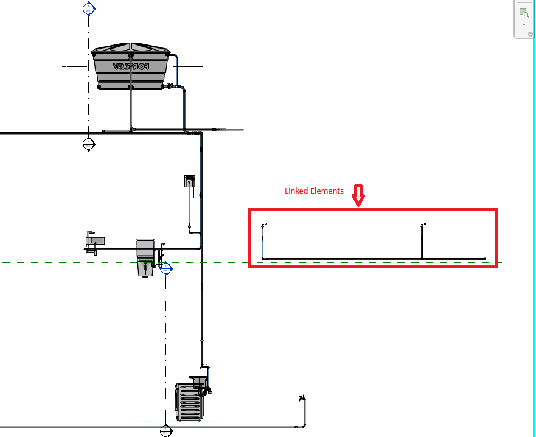

DirectContext3D, Ids and Linked Section Elements
Here are some of the topics that came up this week:
- Revit element id compilation
- Unique cross-document reference
- AU class on
DirectContext3D - Determining elements present in section view
Revit Element Id Compilation
Michael Pescht shared a nice overview of the different Revit BIM element identifiers in his Revit API discussion forum thread on Revit IDs:
Post: There are several explanations available for the IDs used in Revit. Unfortunately, I have not found a complete definition of all IDs in a single document / post. Therefore, I would like to have my compilation checked here in the forum. Thanks in advance.
- Element Id, or just "Id": the unique identification for an element within a single project. Example decimal: 895976; example hexadecimal: 000dabe8
- EpisodeId:
the first part of the
UniqueId, including the characters of the sequence 8-4-4-4-12, referring to the project and the session, e.g., 626f5187-9a17-4713-98b7-532ca3cc31b1 - UniqueId: a stable unique identifier for an element, globally unique across all documents, returned by the API as a string, e.g., "626f5187-9a17-4713-98b7-532ca3cc31b1-000dabe8". It is a hexadecimal sequence of 8-4-4-4-12-8 characters, consisting of two parts: EpisodeId (8-4-4-4-12) + Hexadecimal(Element Id) (8)
- DWF GUID (Export GUID): a hexadecimal version of the IfcGuid Hex(IfcGuid) = DWF GUID Example: 626f5187-9a17-4713-98b7-532ca3c19a59
- IfcGuid: a 22-character code (string) using the 64-character base which includes numbers, upper and lower case letters and some special characters. Although it looks completely different from other GUIDs, the IFC GUID is completely identical to the DWF GUID, but is expressed with a different encoding to make it shorter and easier to understand. Compressed version of the DWF GUID. Hex(IfcGuid) = DWF GUID. Example: compress(626f5187-9a17-4713-98b7-532ca3c19a59)
- ExternalId: The external ID of a geometry object. Example: 626f5187-9a17-4713-98b7-532ca3c19a59-000dabe8; ExternalId = DwfGUID + "-" + Hex(ElementId)
Many thanks to Michael for his compilation. Here is a list of existing information on element ids and unique ids from The Building Coder:
- Element Id
- Retrieving Newly Created Elements in Revit 2011
- Comparing Element Id for Equality
- DWG Issues and Various Other Updates
- Element Id – Export, Unique, Navisworks and Other Ids
- CreateLinkReference Sample Code
- Family Category, Element Ids, Transaction Undo and Updates
- DevDay Conference in Munich and WPF DoEvents
- Revit versus Forge, Ids and Add-In Installation
- Retrieving Newly Created Element Ids
- RevitLookup Search by Element and Unique Id
- Element Identifiers in RVT, IFC, NW and Forge
- Immutable UniqueId and Revit Database Explorer
- 64-Bit Element Ids, Maybe?
- Configuring RvtSamples 2024 and Big Numbers
- 64 Bit Ids, Revit and RevitLookup Updates
- UniqueId
- UniqueId, DWF and IFC GUID
- Melbourne Day Two
- Real-World Concrete Corner Coordinates
- IFC GUID Generation and Uniqueness
- Copy and Paste API Applications and Modeless Assertion
- Element Id – Export, Unique, Navisworks and Other Ids
- Unique Names and the NamingUtils Class
- Understanding the Use of the UniqueId
- Back from Easter Holidays and Various Revit API Issues
- Consistency of IFC GUID and UniqueId
- Revit versus Forge, Ids and Add-In Installation
- RevitLookup Search by Element and Unique Id
- Unique Id and IFC GUID Parameter
- Immutable UniqueId and Revit Database Explorer
Unique Cross-Document Reference
In a related vein, grubdex and ricaun pondered: are references unique across documents?
Question: Are Reference objects unique across documents in my project?
I know that UniqueIDs are and IDs are not.
Answer: Probably yes; the Reference has the UniqueId embedded in the stable representation.
Using a UniqueId of the element with Reference.ParseFromStableRepresentation will return the Reference of the element:
Reference reference
= Reference.ParseFromStableRepresentation(
document, element.UniqueId);
Thank you both for this.
AU Class on DirectContext3D
Here is a go-to source of information for DirectContext3D that you should be aware of when dealing with this topic,
an Autodesk University 2023 class by Alex Pytel:
Determining Elements Present in Section View
Faced with the task of determining which elements are present in a given section view, Wallas Santana and I stumbled across a novel solution using tagging in the Revit API discussion forum thread on how to determine linked elements present in a section:
Question: I have a section with some project elements and a linked file loaded with some other elements in a section view, as shown here:

I need to check which elements of the linked file are present in this section, but I'm having difficulties. I tried to check whether the elements are inside the view's BoundingBox, but without success. Then, I tried to apply another solution to check if a point is inside bounding box.
However, it seems that the position returned in BoundingBox is outside of view.
I use this solution to apply tags to linked elements without any problems:
Reference refe = new Reference(itemconex)
.CreateLinkReference(docsVinculados);
IndependentTag tagConexao = IndependentTag.Create(
Doc.Document, TagConexSelecionada.Id, Doc.ActiveView.Id,
refe, true, TagOrientation.Horizontal, PosicaoFinal);
Answer: The biggest challenge is probably the transformation. One possible approach would be to read and understand in depth all the transformations involved. Another possible approach, in case your tendency is stronger to hack and do rather than study and ponder, might be: create a very simple linked file with just an element or two, e.g., model lines. Host it. Analyse the resulting geometry in the host file. Reproduce the model lines in the host file until their appearance matches the original ones in the linked file. Basically, you just need to determine where a given bounding box in the linked file will end up on the host, don't you?
Since you mention that you can successfully and automatically create tags for the linked elements, another idea comes to mind: before creating the tags, subscribe to the DocumentChanged method to be notified of the added elements.
Then, you can query the tags for their locations.
That will presumably approximate the host project locations of the linked elements.
Response: Hi Jeremy, thank you for your reply, you opened my mind to a possible solution!
I just add a new IndependentTag then check if it's BoundingBox is valid:
IndependentTag tagConexao = IndependentTag.Create(
Config.doc, Config.doc.ActiveView.Id, refe, true,
TagMode.TM_ADDBY_CATEGORY, TagOrientation.Horizontal,
PosicaoFinal);
if (null != tagConexao.get_BoundingBox(Config.doc.ActiveView))
{
// The element is in the view
}
Then, I collect the id's I need and RollBack the transaction in the final, it's working. Btw I'll study how transformations works when I have linked elements in some view. Thank you.
Thank you, Wallas, for raising this issue and confirming.